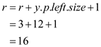
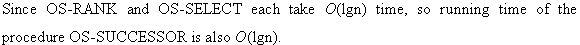
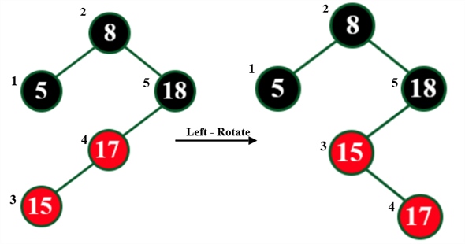

Consider the following diagram of red black tree:

In above red black tree the node x will have x.size attribute. This attribute is used to store the internal node of x sub-tree. The size of any internal node x is
Consider the OS-RANK(T, x) algorithm provided in section 14.1 to determine the rank of a node having key value 35 in above red black tree.
• Initially, the key value of T (root) and x are 26 and 35.
• The 1st line of OS-RANK(T, x) algorithm calculate value of r. Now, add 1 in x left child size. The node x that is 35 does not have left child. Therefore the value of x becomes:
• The 2nd line assigns value of x into y. Therefore the value of y also becomes 35.
• The 3rd line implement a while loop which check whether value of y that is 35 is not equal to T root that is 26. The condition is true so control moves into while loop.
• The 4th line use if statement to check whether y node is right child of its parent. Currently y is 35 which is not the right child of its parent 38 so condition false. The control directly moves to 6th line.
• The 6th line update the value of y with its parent, so now values of y becomes 38. Now control again moves to 3rd line. The while loop again checks value of y that is 38 is not equal to T root that is 26. The condition is true so control moves into while loop.
• The current y node that is 38 is right child of its parent 30 so 4th line condition get true.
• The 5th line calculate the value of r
• The 6th line again updates the value of y from 38 to 30. Now, control again moves to 3rd line, the condition in 3rd line again gets true.
• The current y node that is 30 is not the right child of its parent 41 so 4th line condition get False. Now, control moves to 6th line.
• The 6th line again updates the value of y from 30 to 41. Now, control again moves to 3rd line, the condition in 3rd line again gets true.
• The current y node that is 41 is the right child of its parent 26 so 4th line condition get False.
• The 5th line again calculate the value of r

• The 6th line again updates the value of y from 41 to 26. Now, control again moves to 3rd line, the condition in 3rd line gets false.
• The control directly moves to 7th line. The 7th line returns the value of r that is 16.
Finally the value of r return by OS-RANK(T, x ) algorithm is 16 .

Insertion process:
While insertion, multiple rotations are performed.
First insert the node and increase the rank of every node by 1 starting from root to the inserted node if the node is in the left subtree using the formula given below:
rank[x]=rank[predecessor[x]]+1
Rotations:
Case: Left rotation
In left rotation, the rank of the node on which rotation is made does not change. It remains same as before.
It can be seen from the diagram below:

Case: Right rotation
Same is the case with right rotation, the rank of the node on rotation is being made, rank remains same as shown below:

Deletion:
Opposite is the case with deletion. decrease the rank while deletion. In rotations, the rank does not change.
To find the number of intersections, count the number of inversions in the array of coordinates. The strategy behind counting inversions is that if two chords i and j (i < j) come like (Si, Ei, Sj, Ej) then they don’t intersect each other.
Note that Ej came before Ei that is an inversion. Thus, the coordinates that are inversion do not intersect each other. It is shown below with the help of diagram.
Taking chord (s1, e1) and point (s1, e2), sweeping clockwise, they come in order s1,s2, e2, e1. 2>1 but they came in unsorted order in e1 and e2. Thus, these are inversion. It is clear that these chords are not intersecting each other.
Now, take chord (s2, e2) and (s4, e4) The end points are in order s2,e2,s4,e4. This is sorted order. Thus, these are not inversions. It can be seen from diagram that these chords are intersecting each other.
Algorithm: Intersection(A, p, r):
1. Name all the chord points on the circle from the array A. Name starting point of ith chord as Si and end-point as Ei.
2. Now, calculate the inversions using merge sort using the steps below.
3. if p < r
4. then q = b(p + r)/2c
5. left = Intersection(A, p, q)
6. right = Intersection(A, q + 1, r)
7. inv = Intersection(A, p, q, r) + left + right
8. return inv
9. end if
10. return 0
11. Count the number of inversions.
12. Total number of intersection = – number of intersections
Complexity:
Since this is using the concept of divide and conquer like merge sort, it takes O(nlg n) time to compute the number of intersections.